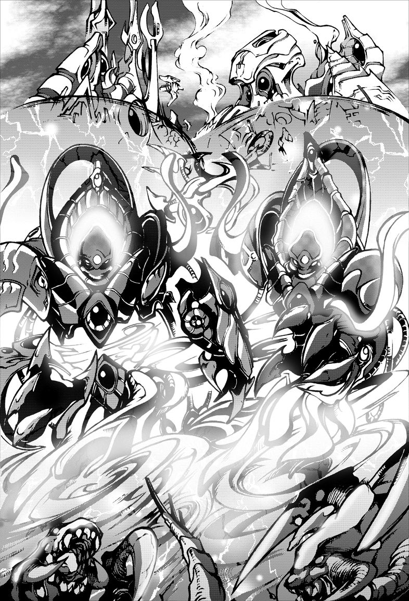

- Stats
- Abilities/Upgrades
- Strategy
- Lore
- Related
Armor: 0 |
 0/0 0 per second
0/0 0 per secondDamage: 25 (35 vs biological) (splash)
Attacks: 1
Cooldown: 1.754
Targets: Ground and Air
Attack Range: 3
Acceleration: 1000
Collision Radius: 1
Requirements: Levels 2-3 requires Twilight Council
| Level |  Level 1 Level 1 |  Level 2 Level 2 |  Level 3 Level 3 |
| Minerals |  100 100 | 150 | 200 |
| Vespene Gas |  100 100 | 150 | 200 |
| Time |  160 160 | 190 | 220 |
| Damage Bonus | +3 (+4) | +6 (+8) | +9 (+12) |
| Total Damage | 28 (39) | 31 (43) | 34 (47) |
VariesVespene Cost:
VariesSupply:
 4
4Produced From:High/Dark Templar Build Time:
12Requirements: High/Dark Templar
Warp Prism Size: 4
Unit Type: Psionic, Massive, Ground
Requirements: Levels 2-3 requires Twilight Council
| Level |  Level 1 Level 1 |  Level 2 Level 2 |  Level 3 Level 3 |
| Minerals | 100 | 150 | 200 |
| Vespene Gas | 100 | 150 | 200 |
| Time | 160 | 190 | 220 |
| Armor Bonus | +1 | +2 | +3 |
| Total Armor | 1 | 2 | 3 |
Requirements: Levels 2-3 requires Twilight Council
| Level |  Level 1 Level 1 |  Level 2 Level 2 |  Level 3 Level 3 |
| Minerals | 150 | 225 | 300 |
| Vespene Gas | 150 | 225 | 300 |
| Time | 160 | 190 | 220 |
| Armor Bonus | +1 | +2 | +3 |
| Total Armor | 1 | 2 | 3 |
| Icon | Minerals | Vespene Gas | Research Time | Researched At |
 | 0 | 0 | 0 | Already Researched |
Minerals:
Varies*Vespene Gas:
Varies*Duration:
12Information: Two of any Templar type may sacrifice themselves to merge into an Archon. This can be two High Templars, two Dark Templars, or even one of each. Upon this merge, the original Templars are lost as they become the new Archon.
Archons can be moved while morphing if they become surrounded and are colliding with other units or the environment. This allows a skilled player to break down forcefields while an Archon is still morphing.
* The Archon itself does not cost Minerals or Gas to create, but the cost comes from building the Templars to merge into it. The Mineral and Vespene Gas cost varies based on what Templars are used to create the Archon.
* Two High Templar have a cost of
100/ 300, one High Templar and one Dark Templar have a cost of 175/ 275, and two Dark Templar have a cost of 250/ 250.
If you have any suggestions for more strategies, go ahead and post on the forums 'here'!
Shift Queue Blinking
Sometimes when you have a large amount of stalkers, blinking can become more difficult and not all stalkers will end up where intended. A way to help this is to queue up a move command (to have the stalkers in range to blink), then the blink, and then another move command (to move the stalkers in front out of the way).
+1 Weapons vs Zerglings
Sum text about how gosu this is
+1 Weapons vs Zerglings
Sum text about how gosu this is
- Overview
The first archon(s) were created unexpectedly and their formation was soon legally sanctioned by Khala.
The creation of an archon is a serious affair for it requires the reluctant sacrifice of valuable Templars for a short-term gain. Archons radiate energy like stars and burn out when depleted. The merging results in the abandonment of the physical form and the loss of self, but those who do so are bequeathed great honor and a place in the templar archives.
The loss of most of the psionic powers of the two merging templar is more than compensated for by the archon's formidable psychic gestalt. Archons can independently erect a resilient shield and direct psionic shockwaves. Emotionally, archons are manifestations of pure rage, though this may be "twisted" should the merging be in error. Archons are much feared by their enemies.
Originally, archons were formed through the merging of two high templar. After the Brood War and the reunification of the protoss, archons can now also be created by merging two Dark Templar or even a Khalai and Nerazim merging together.
{kind=link}
Source Information
Text information from the Starcraft Wiki.
Photo 1 created by Noel Rodriguez. Copyright: Tokyopop.
| Protoss |
| Units |
| Nexus | Probe | Mothership |
| Gatway/Warpgate | Zealot | Stalker | Sentry | High Templar | Dark Templar | Archon |
| Robotics Facility | Observer | Immortal | Colossus | Warp Prism |
| Stargate | Phoenix | Void Ray | Carrier | Interceptor |
| Structures |
| Basic Buildings | Nexus | Pylon | Assimilator | Gateway/Warpgate | Forge | Photon Cannon |
| Advanced Buildings | Cybernetics Core | Robotics Facility | Twilight Council | Stargate |
| Top Tier Buildings | Robotics Bay | Templar Archives | Dark Shrine | Fleet Beacon |